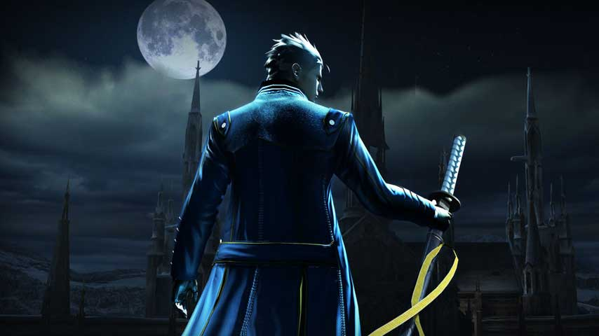
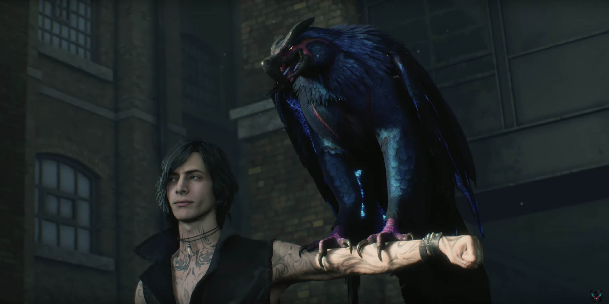
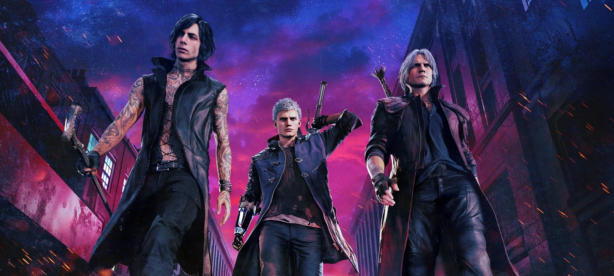
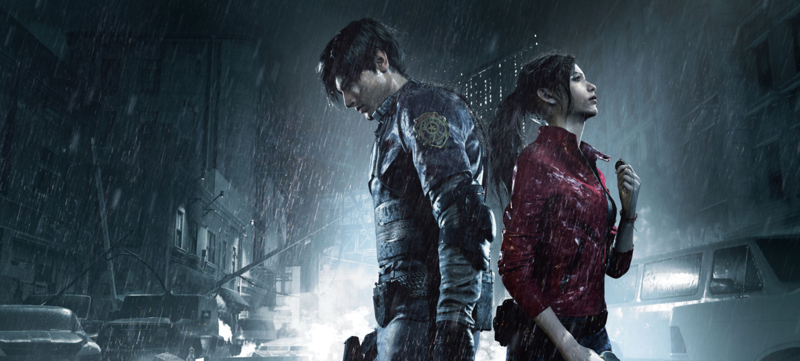
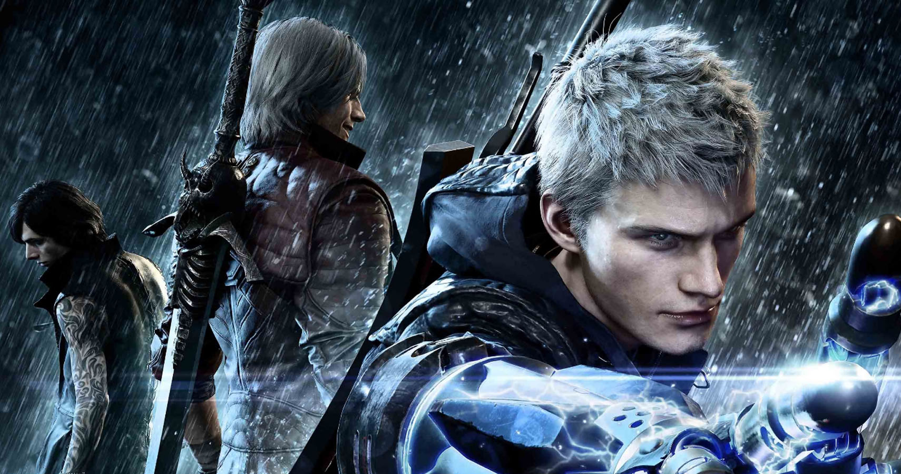

Devil May Cry 5 — компьютерная игра в жанре слэшер, разработанная и изданная японской компанией Capcom. Пятая игра основной оригинальной серии Devil May Cry и шестая часть франшизы. Игра была анонсирована в июне 2018 года на конференции E3 2018. Выход игры состоялся 8 марта 2019 года на платформах PlayStation 4, Xbox One и Windows

Игровой процесс
Данте и Неро возвращаются в качестве игровых персонажей. Всего будет три персонажа со своим собственным стилем ведения боя в разрушаемом окружении. Сам геймплей претерпел мало изменений, по сравнению с предыдущими играми серии — игроку так же, как и раньше, придётся быстро и «стильно» расправляться с врагами. Сражение осуществляется с помощью вариативного набора оружия ближнего и дальнего боя из-за чего игрок получает определённый «уровень стиля», который зависит от многих факторов; типа разнообразия использованных приемов, длины самой комбинации ударов или уклонения от атак. Музыкальное сопровождение так же будет зависеть от эффективности игрока в бою
Cюжет
Действия происходят спустя несколько лет после четвёртой части в городе Red Grave. Демоническое вторжение привлекает внимание Неро, за это время создавшего свое собственное передвижное агентство-фургон по охоте на демонов. Также, вместо его демонической руки, которую оторвал таинственный незнакомец, у него механический протез (англ. Devil Breaker), созданный его инженером Нико
Разработка
Capcom подтвердили, что игра выйдет до апреля 2019 года. Разработка ведётся под началом ветерана серии Хидэаки Ицуно. В игре используется новый игровой движок Capcom RE Engine, который впервые был использован в Resident Evil 7: Biohazard. В интервью Ицуно рассказал, что они нацелены на фото-реалистичный графический стиль. Так же, он подтвердил, что демо версия будет доступна в августе 2018 года на Gamescom